->
->

CHAU'MUN 2025
 How can we deal with the consequences of rising sea levels and help societies adapt to this situation ?
How can we deal with the consequences of rising sea levels and help societies adapt to this situation ?
 19-21 march 2025
19-21 march 2025
 How can we deal with the consequences of rising sea levels and help societies adapt to this situation ?
How can we deal with the consequences of rising sea levels and help societies adapt to this situation ?
 19-21 march 2025
19-21 march 2025
(This page is based on content from ville-chaumont.fr, feel free to visit it for more information.)
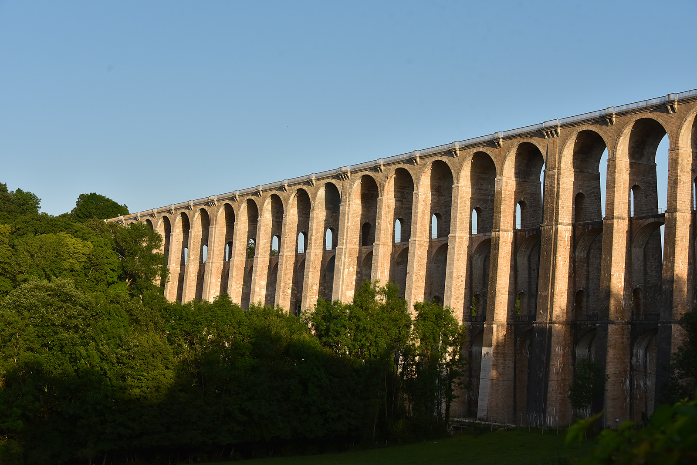
ville-chaumont.frThis remarkable viaduct spans 600 meters in length, with 50 arches up to 52 meters high. Designed by architect Eugène Decomble, it was built in just 15 months between 1855 and 1856 by a force of 2,500 workers and 300 horses, giving the railway access to the northern end of the city upon completion. It was partially destroyed in 1944, but was quickly rebuilt. The viaduct is a symbol of the city, and has featured in several films. In 2012, special lighting was installed to illuminate it at night.
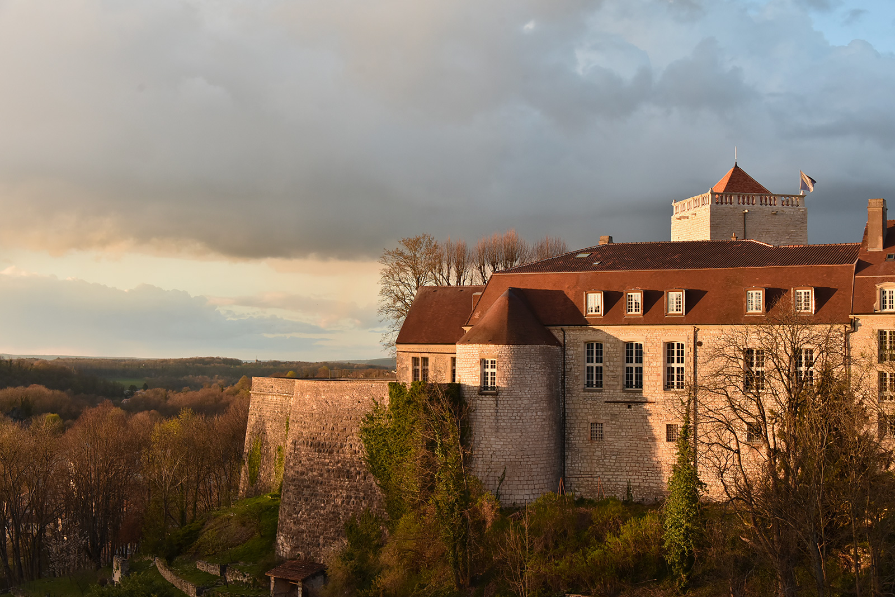
ville-chaumont.frThe donjon, the only remaining part of the castle of the Lords of Chaumont, stands on a spur overlooking the Suize valley. This square tower, 19 meters high, was built in the 12th century and has retained its medieval appearance with thick walls. Initially defensive, the donjon lost a floor and served as a prison until 1886, leaving engraved inscriptions on its walls. It is accessible on request through the Médiévalys association. Nearby, there is a medieval-inspired garden and a path along the old ramparts.
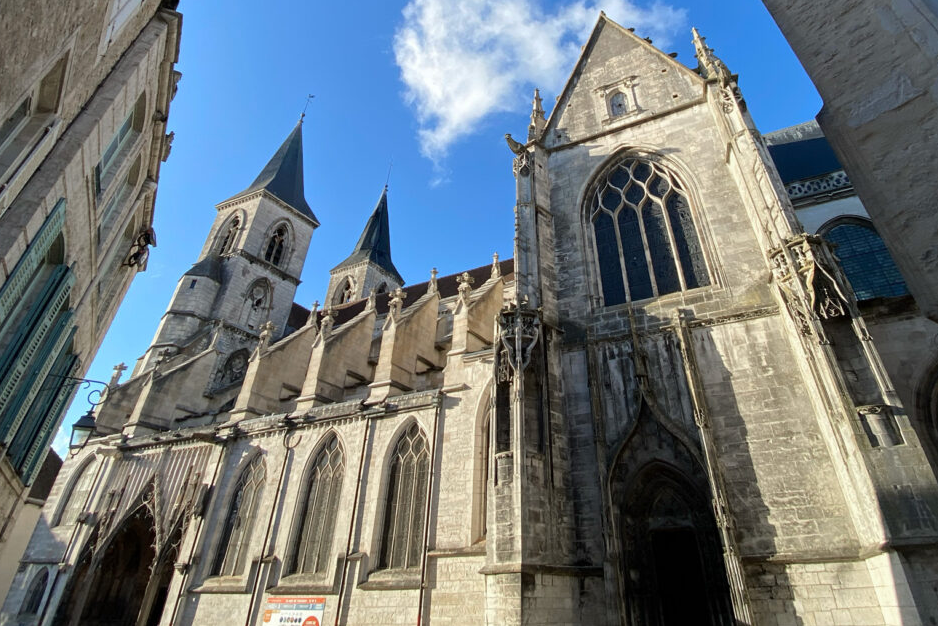
THIRION LouisThe Basilica of Saint-Jean (Saint John), located in the heart of the old medieval city, was initially built in the early 13th century, with part of the facade and nave still preserved. Over the centuries, additions have been made, including a portal in the 14th century and side chapels between the 15th and early 16th centuries. The transept and choir, rebuilt between 1517 and 1543, combine flamboyant Gothic elements and early Renaissance. The basilica's furniture is remarkable, including a Tomb (late 15th-early 16th century), works by Jean-Baptiste Bouchardon, a Tree of Jesse from the 1530s, 16th-century murals, and paintings from the 17th, 18th, and 19th centuries. The basilica also houses a 1872 Cavaillé-Coll romantic organ, with a case dating from the second half of the 18th century.
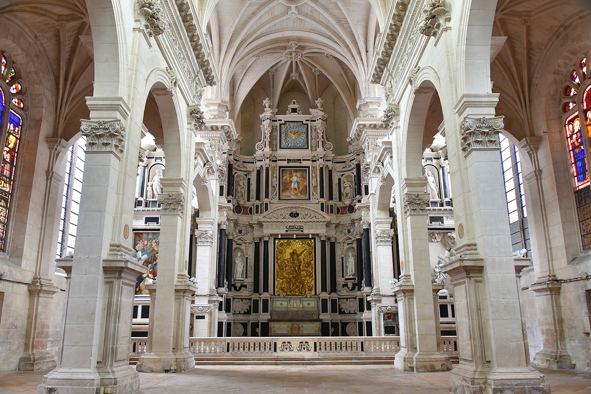
ville-chaumont.frThe Jesuit chapel, built between 1629 and 1640 thanks to donations from local families, is a typical example of Jesuit architecture. Its interior is richly decorated, with a monumental altarpiece by Claude Collignon and a high relief added in the 19th century by Jean-Baptiste Bouchardon. The facade was redone in 1817 by architect Mangot. Next to the chapel is the Bouchardon fountain, in homage to the sculptor Edme Bouchardon. After the Revolution, the chapel served as a place of worship for the first high school in Chaumont and now hosts contemporary art exhibitions, being open to visitors in the summer.
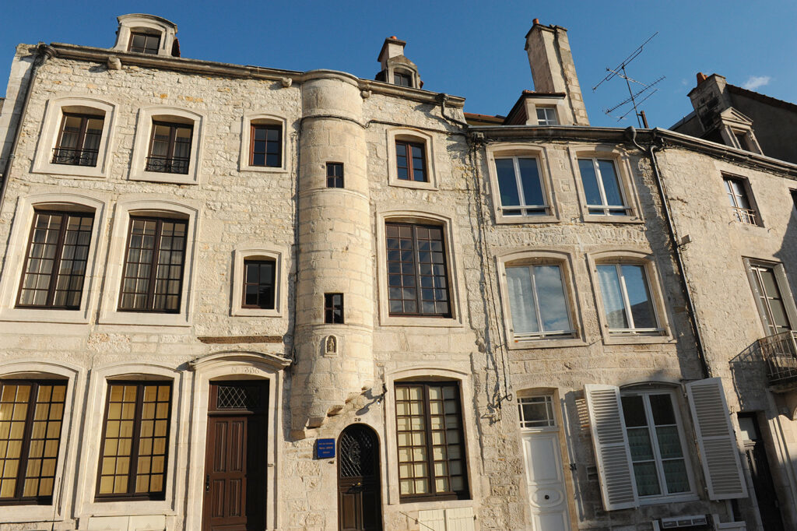
ville-chaumont.frThe turrets, emblematic of Chaumont, intrigue passersby who explore the old town. Very widespread around the town, only about thirty remain today, not counting those hidden in courtyards. These structures, which are studied by architecture students, vary in shape (square or circular) and style (with or without roofs, simple or decorated facades). Some also include statuettes built into niches. Built to optimize public space, the turrets served as entrance vestibules and stairways to the upper floors.
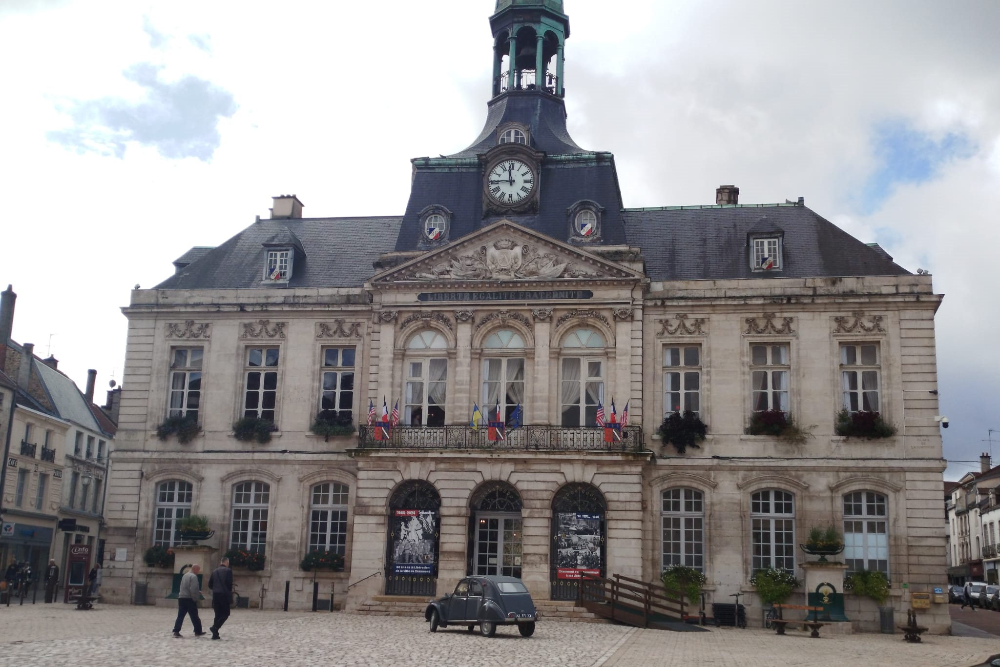
THIRION LouisThe town hall of Chaumont, built between 1787 and 1790, replaced the old Barle tower, which had become too small for the municipal administration of a town of 6,200 inhabitants. Designed by architect François-Nicolas Lancret, the building reflects the spirit of the time with its straight lines, regular curves, and sober symmetry. A model, displayed at the Museum of Art and History, shows the initial plans, including a small theater, abandoned during the Revolution. Listed in the supplementary inventory of Historic Monuments, the Town Hall has been illuminated since 2012 to highlight the elegance of its facade.
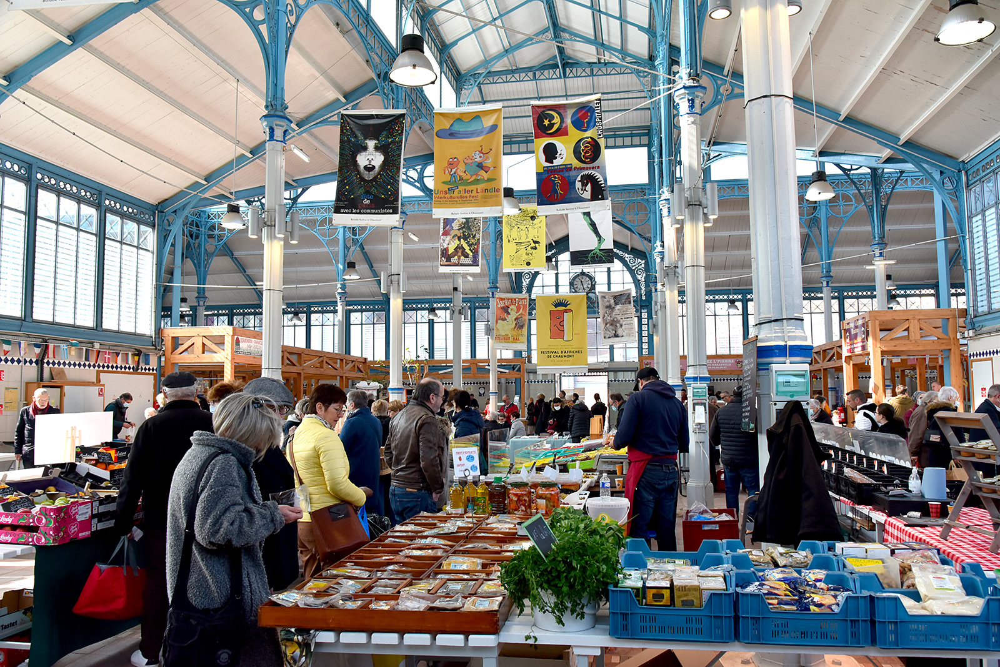
ville-chaumont.frThe Chaumont market halls, built between 1883 and 1886 by the Chaumont architect Dupuy, are a typical example of late 19th-century architecture, in the Baltard style. Using cast iron, this innovative material made it possible to create vast spaces with large glass openings. The Market Halls were erected on the site of an old grain market, itself built in 1799 on the site of the Saint-Michel church, demolished the same year. This church, dating from the 14th century and expanded in the 17th century, had served as a prison and military store during the Revolution. The Market Halls, renovated in 2004, now host various events, including a food market every Saturday morning.
The Crèche museum, dedicated to the celebration of Christmas, houses the finest collection of 18th-century Baroque Neapolitan nativity scenes in France. Located in the heart of the historic city, this museum offers a festive experience for all ages with a collection of nativity scenes, figurines, and other Christmas decorations from different parts of the world. The museum also hosts seasonal events and workshops for children.
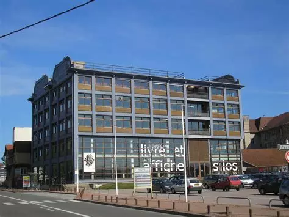
.The Silos is a multimedia library. The building is characteristic of 30s architecture, while its name recalls its previous use as an agricultural cooperative. The renovation project preserved the building’s historical seed hopper, which extends vertically across all (x number) of the building’s floors. It is home to an expansive collection: 5,000 posters from the late 19th century, more than 15,000 contemporary posters, and 450 manuscripts/incunabula.
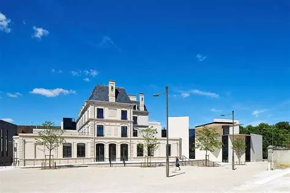
.Le Signe, the National Center of Graphic Design, is dedicated to promoting and exploring graphic design in all forms. Opened in 2016, it picks up on the city’s tradition of hosting international poster and graphic design festivals, first started in 1990. The center provides exhibitions, workshops and conferences to celebrate graphic design as an artform and way of communication. With its multi-national collection of posters, Le Signe reinforces Chaumont’s position as an important cultural centre of graphic design.
In 1716, Jean-Baptiste Bouchardon began designing a project for a hospital to be built far from the center of Chaumont, seeking to allow patients to benefit from the fresh air of the countryside. Later on, the architect Claude Forgeot downsized and reimagined the original plans, with his reconstruction finishing in 1765. The building’s stark facade is marked by the Chapel’s monumental entrance, with symmetrical buildings on either side.
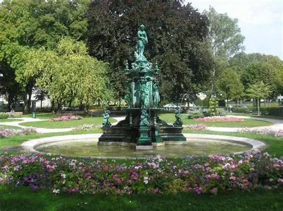
.Boulingrin park, created in the mid-19th century after the demolition of the city fortifications, boasts an ornate fountain forged in 1865 by the foundry at Tusey, in the nearby Meuse département. The fountain, with its loving nymph, adds a touch of elegance to the garden, while the clear water creates harmony between the flourishing garden and the ornamented metalwork. In addition, the park has a bandstand, and a replica of the statue "l’Amour taillant ses flèches", made by the sculptor Edme Bouchardon of Chaumont.
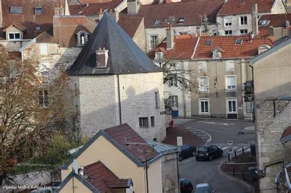
THIRION LouisLa tour d’Arse, a remnant of the old city gate “la Voie-de-l’Eau”, and part of the second city wall from the 16th century, marked the entrance of Chaumont in times past. Once the site of the town’s arsenal, it later became a bakery before being re-acquired by the city in 1985. Refurbishment works reinstated its original appearance, including its amazing wooden framework. The tower butts against a 200-meter-high fortification which links to the bastion of the old castle.
 .
.
The prefecture building in Chaumont is a remarkable example of 19th century architecture. It is known for its neoclassical style, with imposing architectural elements such as columns and pediments alongside elaborate decorations. The building is made to reflect the authority and dignity of the Government’s institutions. Its majestic facade and harmonious proportions highlight the prefecture’s importance as the administrative center of the Haute-Marne département.
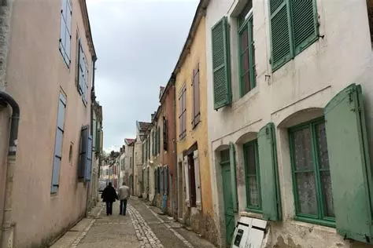
adventuringthegreatwidesomewhere.comRenovated in the 1990s, the Rue Juvet is a window into the ancient faubourgs of Chaumont, with its quaint houses, turret staircases, colorful facades and small gardens. It is named in honor of Hugues-Alexis Juvet, a doctor and steward, who tended to the sick during the plague wave of 1741. In memory of this, the motto "Nihil Ni Juvet" was engraved on the side of his house. Louise Michel, a prominent figure from the Paris Commune, also stayed for a day in this street around 1850-1851, while working towards her primary teaching certificate.